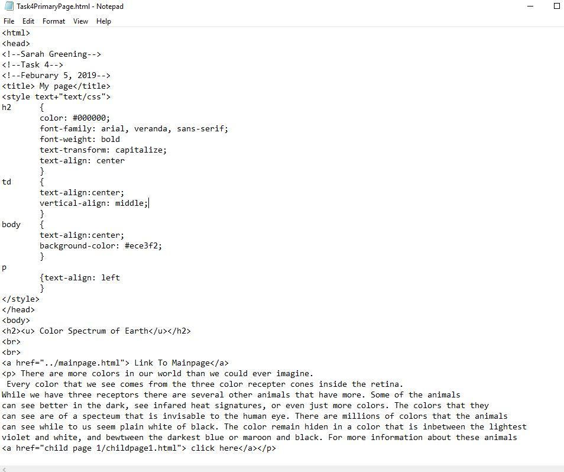
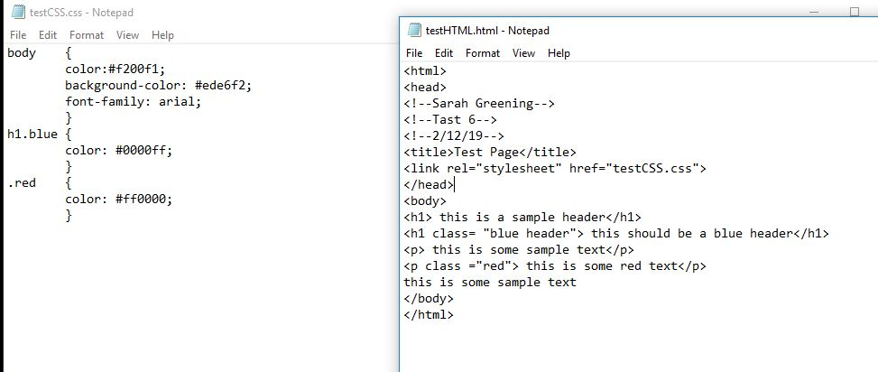
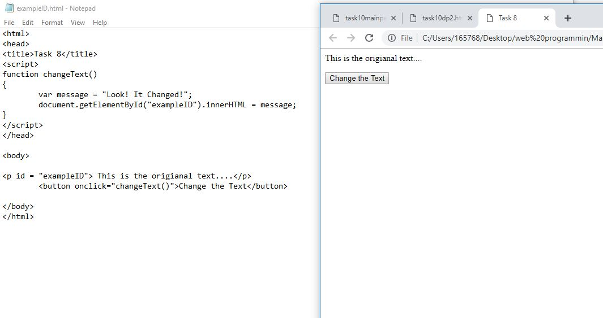
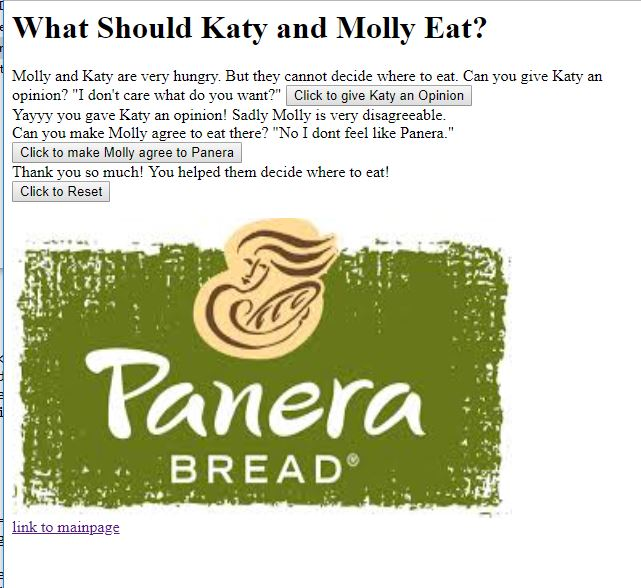
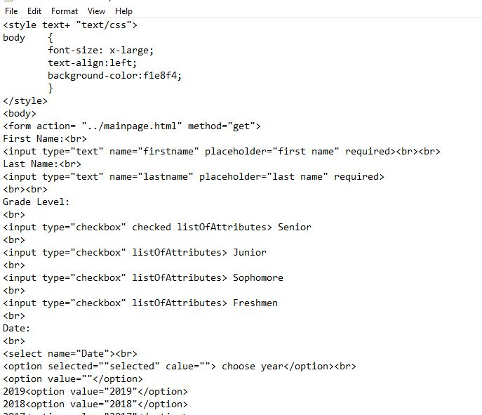
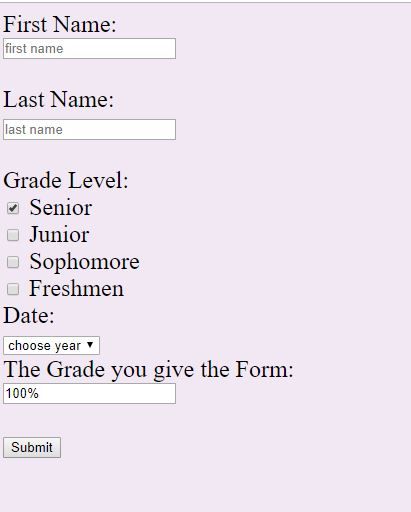

Crispy CSS This is useful because you don't have to link to other pages. You also can just scroll up and fix an issue. You dont have to come up with weird names becasue of how many things you want to change in different pages. The page CSS can be specialized for only that page. This is useful becasue you only have to have one file for all of your CSS code. Also you can have multiple pages with the same format because they have the same CSS tags and you dont have to re-write the code more than once. Why did this make me cry?
|
Jalopy Javascript This allows you to change text with a click of a button. Yet it isn't nearly as fun as i make it sound. Overal though it was the best and most fun of all of the tasks because it makes logical sense and I can see myself actually using the form in the future and that it isn't only useful in this class. You know what I want to make these collums somewhat similar so ima add in a photo of my actual task 5. Tada I added it and this makes the chart look a lot better but I just need to ramble for a few more lines until they match. Why did this make me cry?
|
Flunky Forms This is the code for the form This is the end result Now I essentially have to ramble until the texts align because the website has to have visual appeal. Adam is duh bestttt I dont think nyone else is going to see this but oh well. I like the color blue I like the color red. Hopefully this will be enough to fix the unbalance of the spacings. Yet it is not enough why wount this work and the css wont fix it no matter how hard i try. Why did this make me cry?
|
|---|
Combined these make me cry :)